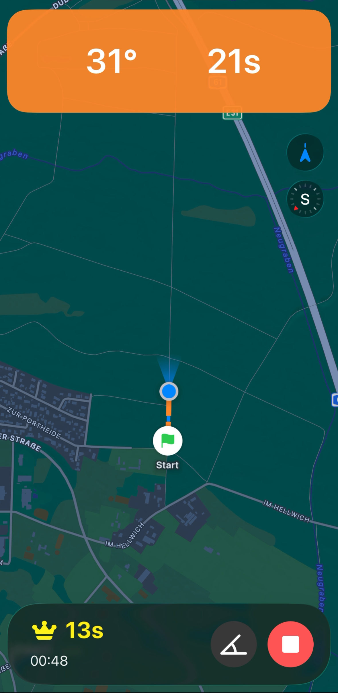
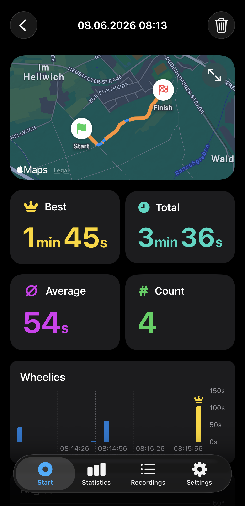
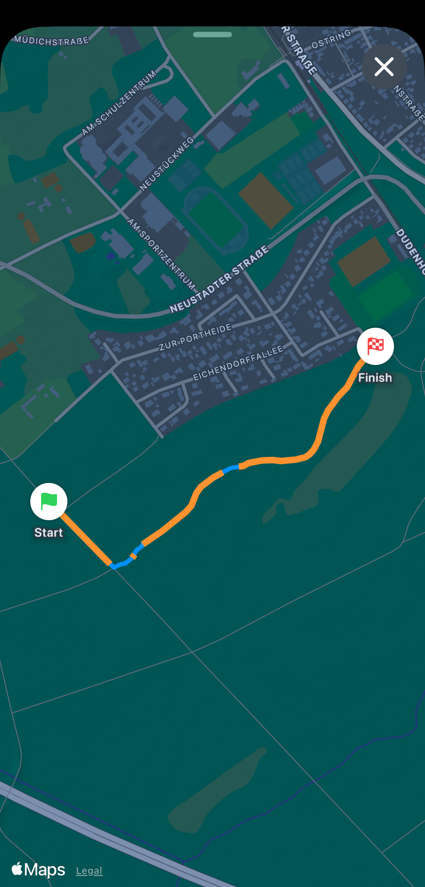
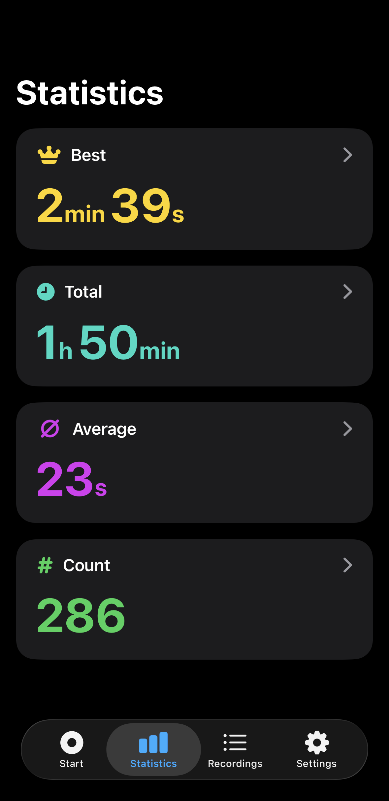
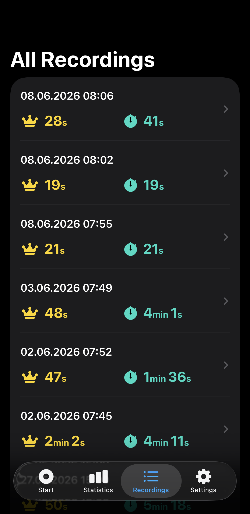

My Wheelie Tracker
Fahrten aufzeichnen. Wheelies erkennen. Jede Session auswerten.

Entwickelt für Fahrer, die echte Daten wollen.
My Wheelie Tracker zeichnet deine Route per GPS auf und erkennt Wheelies automatisch über die Sensoren deines iPhones – damit du dich voll aufs Fahren konzentrieren kannst. Gemacht für Mountainbiker, Motocross-Fahrer, BMX-Athleten und alle, die ihre Wheelies lernen, üben und verbessern möchten.
Funktionen
-
Live-Tracking
Verfolge deine Route auf einer Live-Karte. Die Wheelie-Dauer ist auf einen Blick sichtbar – du weißt immer, wie deine Session läuft.
-
Automatische Erkennung
Verfolge den Neigungswinkel deines Fahrrads kontinuierlich – jeder Wheelie wird erkannt und gespeichert, inklusive Dauer und Position auf der Karte.
-
Deine Daten
Behalte deine Daten für dich – lokal gespeichert, niemals geteilt, niemals verkauft.
-
Session-Auswertung
Erhalte nach jeder Session eine vollständige Zusammenfassung: Gesamtdauer, Anzahl der Wheelies und dein bester Wheelie. Sieh genau, wo auf deiner Route jeder Wheelie stattgefunden hat.
-
Verfolge deinen Fortschritt
Schaue Dir deine gesamte Historie an und verfolge deine beste Wheelie-Dauer über die Zeit. Beobachte, wie du dich Session für Session verbesserst.
-
Beste Wheelie-Zeit
Aufzeichnung der längsten Wheelie-Dauer.
Screenshots
My Wheelie Tracker in Aktion.




Sicherheitshinweis
My Wheelie Tracker ist kein Sicherheitsgerät und ersetzt nicht das eigene Urteilsvermögen. Wheelies und andere Stunts können gefährlich und in bestimmten Situationen oder an bestimmten Orten illegal sein. Nutze die App nur dort, wo es erlaubt und sicher ist, und stoppe die Aufzeichnung sofort, wenn die Bedingungen unsicher werden.
Datenschutz
My Wheelie Tracker erfasst GPS-Standort- und Bewegungsdaten, verarbeitet alle Daten lokal auf deinem Gerät und gibt keine personenbezogenen Daten an Dritte weiter.
Datenschutzerklärung lesen